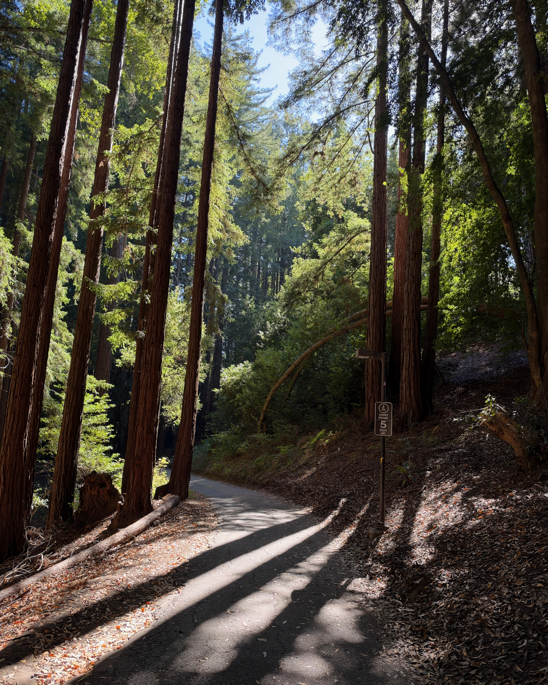

01 / THE STORY
Take the
scenic route.
There is something special about finding a quiet path between the trees. The redwoods are part of what makes an ordinary walk across campus feel different.
I photographed this path and prepared the image for the web by cropping, resizing, and exporting it as a JPEG.
Explore official campus tours